Screenshots for GNOME and Cinnamon
Take it, mark it up, copy it
Shot freezes all your monitors at once. You pick a region, a window or a monitor, draw on the frozen screen and then copy, save, pin, upload or read the text from the result. What a screenshot for documentation needs is in one overlay.
- No account
- No third-party code
- Uploads only when you press Upload
Runs on GNOME 45 to 50 (Wayland and X11) and on Linux Mint with Cinnamon 6 (X11). The screenshots here are taken from Shot itself.
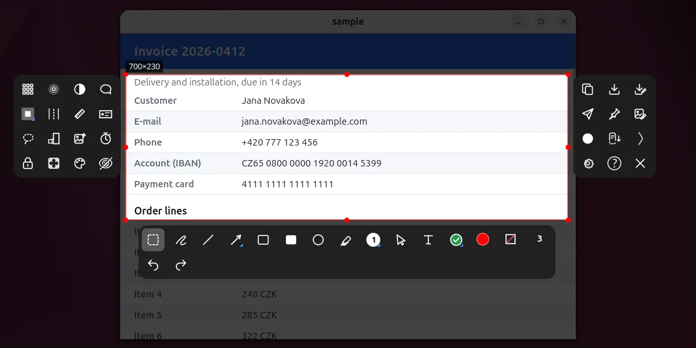
Closer look
Four things worth a closer look
Most of Shot is what you expect from a screenshot tool. These four parts are made for screenshots of documentation, of long content and of procedures, and they are described here in detail.
Scrolling capture, and a Stop for when it never ends
Choose a region over a long page, a chat, a list or a table and press Scroll. Shot scrolls the content under the region by itself, takes a picture after every step and joins them into one tall picture. It works in applications that scroll with the mouse wheel.
- Stop at any moment. A red Stop button sits just under the region the whole time. Press it and Shot ends the run and gives you what is joined so far. This is the way to end a table or a feed that has no end, where waiting would only reach the height limit.
- From here or from the start. Shot asks, and with the second answer it first scrolls back to the beginning of the content. The setting Where a scrolling capture starts remembers the answer.
- It waits for the picture to hold still. After every step Shot compares two pictures a moment apart and takes the one that no longer moves, so a page that scrolls smoothly or loads more while it scrolls is not read in the middle of its movement.
- It joins by what is on the pictures. A step is about half the region, so the pictures overlap, and Shot finds the shift by comparing rows. A fixed header or footer is taken once, a scrollbar and the shade of an item under the pointer do not confuse it, and when two pictures do not join it goes back and takes a smaller step.
- It ends by itself when the content stops moving three times in a row, or at the longest picture set in the settings (30000 pixels at first).
- Do not switch to another window until it ends. The wheel goes to the window under the pointer, and the next steps would scroll the wrong thing.
- Where the wheel does nothing Shot notices after two steps, asks you to scroll yourself and takes the pictures as you go. Shot's own key finishes it.
- Sideways, and the result is a normal picture. The Sideways button does the same for a wide table or a timeline. The result opens as a tall or wide picture you can scroll, draw on and copy like any other.
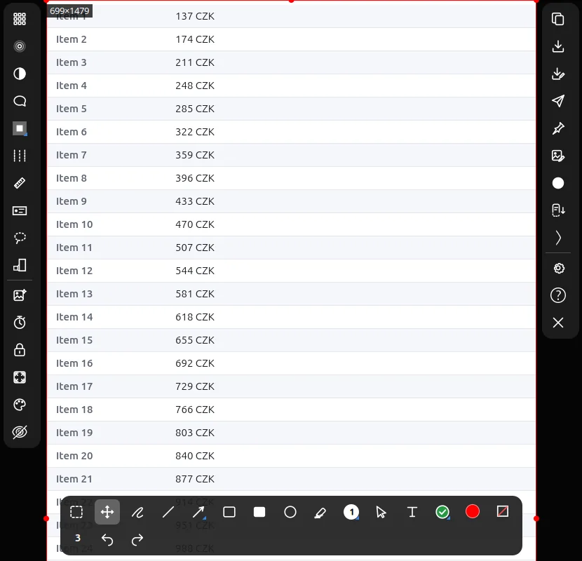
Personal data found and covered for you
Ctrl+Shift+R reads the picture and puts a pixelation on every e-mail, phone number, account number, IBAN and card number it finds. You check the result and send the picture on.
- How it looks for them. Shot runs the text recognition of tesseract four times next to each other, on the picture at its size, enlarged twice, enlarged three times and enlarged three times and slightly blurred, and merges what the four passes found. The languages are set in the settings, for example eng+ces.
- Ordinary drawings. Every finding becomes a pixelation drawn like any other, so you can move it, remove it or add one for something Shot missed. Ctrl+Z takes all of them back at once.
- What it finds. On a set of 120 made-up screens it found 91 % of such items and put no box on a wrong place. It does not find names or addresses, so look at the picture before it goes out.
- Pixelate, blur, invert. Keys B, U and I cover an area you drag over. They are drawings like the others, so they can be moved, changed and undone.
- Lasso. Key J cuts the picture to a free shape. Outside it the picture is transparent (a JPG gets a white background), and several lassos add up.
- Also in the step recorder. The option Cover personal data runs the same search on every step, pixelates what it finds and leaves it out of the caption. A step that could not be checked is not saved.
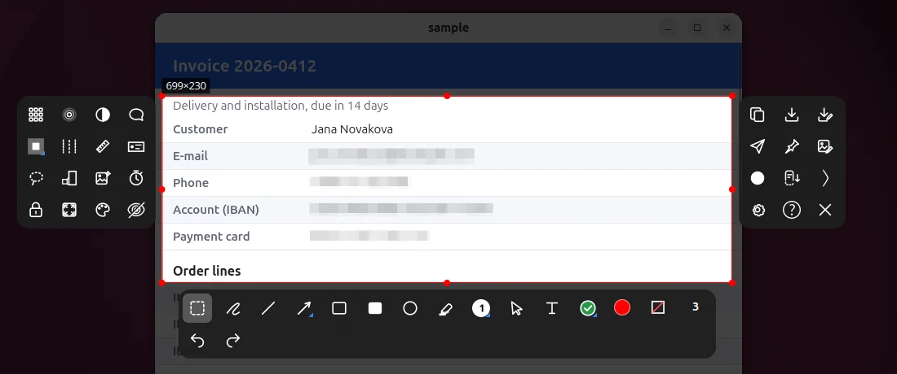
A document of steps from your clicks
Ctrl+Shift+Print starts the step recorder and you do the procedure as usual. Every mouse click becomes one numbered picture, and when you stop, the pictures are a document.
- One click, one step. At the moment of the press Shot captures the monitor under the pointer, or the window under it, and draws a red circle with the number of the step where you clicked. A click on Shot's own icon or menu and a click in the open overlay are not steps.
- Steps with no click. Shift+Alt+Print adds a step by hand, for something done with the keyboard.
- The result. The same shortcut ends the recording. In the folder
steps-<date>in your save folder are01.png,02.pngand so on,steps.mdand onesteps.htmlwith the pictures inside, so it can be sent as a single file. - Captions you can rewrite. Every step has a caption such as "Click in Firefox - Settings", taken from the application and the window title, and you can change it.
- From a script.
shot-cli steps start,stopandadddo the same, and recording a region and recording steps exclude each other.
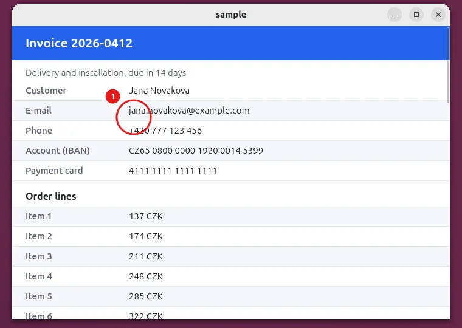
A capture you can come back to
A capture is not only a picture. Shot keeps the drawings apart from the picture, so you can open it later and change what you drew.
- A card after every capture. After copying or saving, a card with a thumbnail stays in the lower right corner for 6 seconds. Edit opens the picture again in Shot with its drawings.
- A project, not only a PNG. Every capture is also kept as a
.shotproject, the picture without the drawings and the drawings relative to the region. After opening it, arrows, boxes and texts can be picked and changed again, not painted over. - History. The newest captures are listed in the panel menu, and how many are kept is a setting.
- Several regions in one capture. Ctrl+drag adds another region, and the result keeps every one in its place and leaves the space between them transparent. A lasso cuts a free shape.
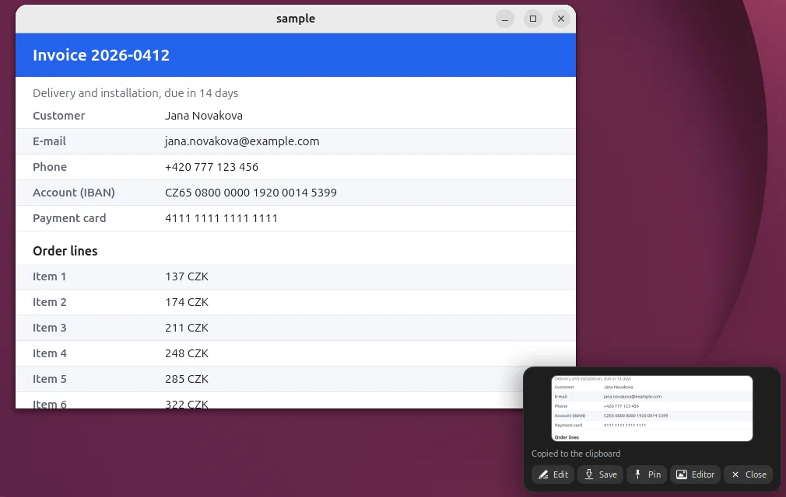
In October 2026 the author went through the functions of 14 screenshot tools, among them ShareX, Snagit, CleanShot X, Shottr, Flameshot, Ksnip and Spectacle. Several parts above, such as scrolling capture, fixed region sizes and reopening a capture with its drawings, are known from commercial tools. Shot has them at no price and for Linux.
What Shot does
Eight things, each with its own chapter below.
Choose what to capture
A region over several monitors, a window, a whole monitor or several regions at once.
Draw on it
Arrows, boxes, numbers, text, stamps, a magnified detail and more, with undo for every step.
Hide what must not be seen
Pixelate, blur or let Shot find e-mails, accounts and card numbers for you.
Finish the picture
Shadow, border, rounded corners, a torn-paper edge, rotation and a background.
Send it on
Copy, save, pin to the screen, open in an editor, read the text or upload.
Capture what does not fit
Shot scrolls the content itself and joins the pictures, down or sideways.
Record
A region as a short WebP or GIF, or every click as a numbered step in a document.
Set it your way
Folder, file name, quality, destinations, shortcuts and the look of the panels.
01
Choose what to capture
Shot freezes every monitor at once. Drag over the frozen screen, the region may cross monitors, and a magnifier shows the pixel under the pointer with its coordinates.
- Region, window or monitor. Drag for a region, click outside it for the window under the pointer, Shift+click for the whole monitor. A window taken by a click is captured alone, with transparent rounded corners.
- Several regions. Ctrl+drag adds another region to the same capture. The result keeps every region in its place and leaves the space between them transparent.
- An exact size. Ctrl+R takes a size such as 1280x720, a saved preset or a locked aspect ratio. The arrow keys move the region by one pixel.
- Edges snap to the edges of windows and monitors. Alt turns the snapping off. Ctrl+wheel zooms the frozen screen up to 8x for precise work.
- Alt+drag inside the region lifts what is in it and drops it where you let go, for example in the middle of a monitor where there is room around it for the toolbars and the drawing.
- Delay and repeat. Ctrl+D captures after a countdown, so a menu can be opened first. Ctrl+L remembers the region for repeated screenshots of one place.
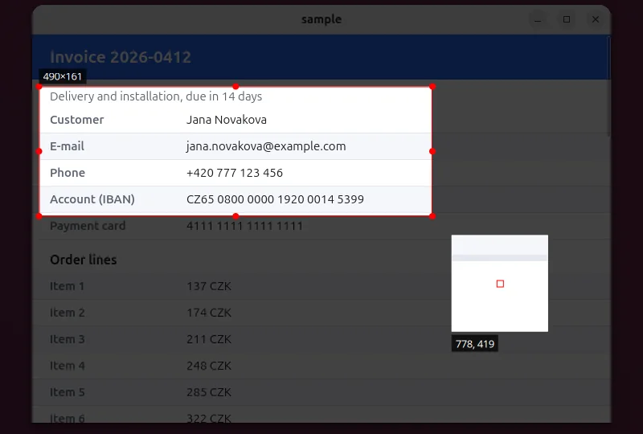
02
Draw on the frozen screen
The tools sit in a bar below the region and every one has a key, mostly the ones Flameshot uses. Every drawing is an undo step, and a drawing can be picked and changed later.
Click a drawing to pick it, Shift+click adds more. A picked line or arrow shows dots on its points, and dragging a plus in the middle of a segment adds a point. Snapping to other drawings and to the region can be switched off with Alt.
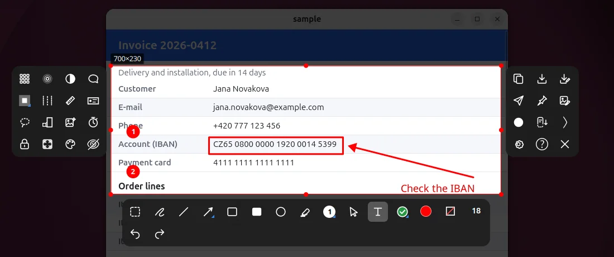
03
Finish the picture
Ctrl+F opens the effects of the whole image with a live preview. They are part of the picture that leaves, and they can stay on for the next captures.
- Shadow and border. A soft shadow under the picture and a frame in a colour and a width of your choice.
- Torn paper. The picture looks torn out of a sheet, with randomly torn edges and the shadow running along the tear.
- Shape. Rounded corners, trimming the edge, rotation (Ctrl+comma and Ctrl+period turn it by a quarter) and a scale of the output.
- Background. A margin around the picture in a colour or a gradient, and a grayscale version.
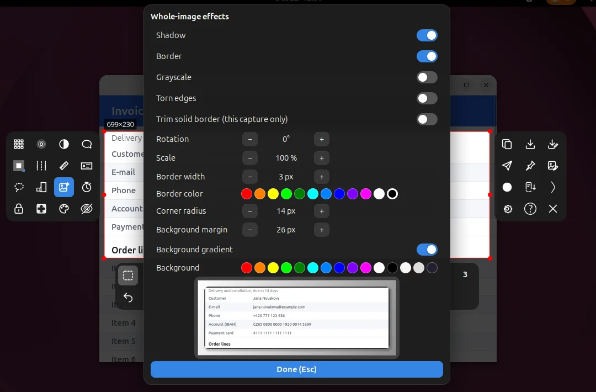
04
Send it on
Enter copies, and what else happens is a key or a click away. Tab opens a list of destinations.
- Copy and save. Enter, Ctrl+C or a double-click copies, Ctrl+S saves and Ctrl+Shift+S saves as. The clipboard always gets a PNG. The file name pattern and the folder are in the settings.
- Send to. Tab offers copy, save, save as, pin, an image editor, reading the text (tesseract) and Imgur with your own Client-ID.
- Pinned pictures. Ctrl+P pins the picture on top of the screen. Drag moves it, the wheel zooms it, Ctrl+wheel changes the transparency, and the right button opens a menu that includes clicking through it.
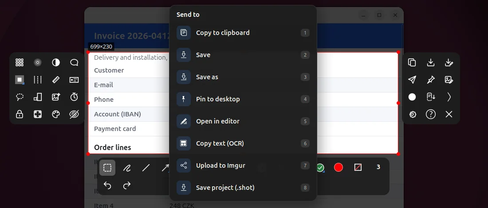
05
Record
Two ways to show a procedure: a short recording of a region, or a document made of the clicks you make.
- Record the region. Ctrl+Shift+V or the Record button closes the overlay and records the live screen in the region. A thin red frame sits just outside the region, so it is not in the recording, and every click shows a red ripple.
- WebP or GIF. ffmpeg converts the recording, WebP is the default and much smaller than GIF, 15 frames a second. It stops with the panel menu, Shot's own key or after the time limit (60 seconds at first).
06
Several monitors
The overlay treats all your monitors as one screen.
- One frozen screen. All monitors freeze together, a region can cross a border, and Ctrl+A takes the whole desktop. A setting can start every capture by picking a monitor first.
- The bars stay beside the region. Drawing tools below it, special tools on its left, output on its right, whole, also over the border of two monitors. A bar never covers the region unless there is no room anywhere.
- Where there is no room on a side, the left bar goes to the right of the region, the right bar to the left of it and the drawing tools above it, and only then along the edge of the monitor inside the region. No bar disappears.
- Room around a small region. Alt+drag inside the region lifts it and puts it where there is space.
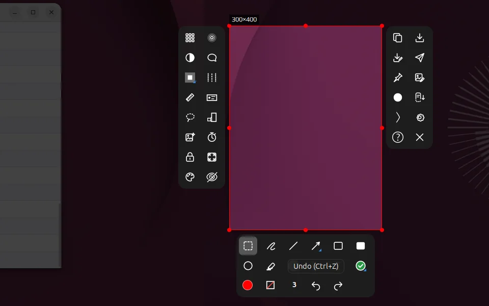
07
Settings
The settings window opens from the panel menu or from the overlay. Most of it is on one page, General, then Keys and About.
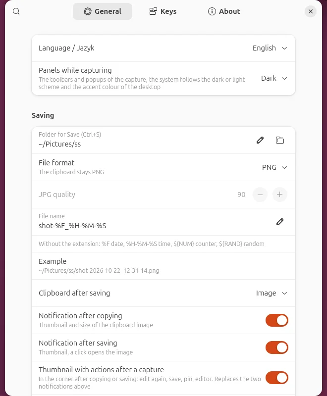
Saving
- Folder and file nameThe folder for Save, and a pattern with the date, the time, a counter and a random part.
- JPG qualityThe clipboard stays PNG whatever the file format is.
- After saving or copyingNothing, a thumbnail, or the card with actions, and how long it stays.
Screen
- Dimming outside the regionHow dark the frozen screen is around the region.
- Remember the last region, pick a monitor firstTwo ways to start the next capture faster.
- Magnifier, size label, short names under iconsWhat the overlay shows while you choose.
- History and the pointerHow many captures are kept and whether the real pointer is in the capture.
Drawing
- Colour and widthFollow the last use, or stay as they are.
- Arrow heads, counter start, fill opacityThe starting values of the tools.
- Snapping of drawingsTo each other and to the region, Alt turns it off while dragging.
- Text and the context stampAlignment, a background behind new texts and the format of the stamp.
Recording and steps
- Format and speedWebP or GIF, the frames a second and the time limit.
- Pointer and ripplesWhether the recording has the mouse pointer and a ripple at every click.
- Step recorderA step captures the monitor or the window under the pointer, and the option to cover personal data.
Scrolling capture and effects
- Where a scrolling capture startsAsk, always from here or always from the beginning, and the longest picture.
- Whole-image effectsShadow, border, grayscale, torn paper, scale, rounded corners and the background, kept for the next captures.
Destinations
- What Enter doesAsk with the list of destinations, or copy or save at once.
- Text recognition languagesThe tesseract codes joined by a plus, for example eng+ces.
- Imgur and the editorYour own Imgur Client-ID and the program for Open in an editor.
Keys
- ShortcutsPrint starts a capture and Alt+Print takes the active window. Both are changed here, and every key of the overlay has its place on the page Keys.
- BackupAll settings and shortcuts go to a JSON file and come back from one. The Imgur Client-ID stays out of it.
About
- Version and what is newThe version, the changes in it and a check for a newer one.
- UpdatesOnce a day Shot asks GitHub for the newest release and nothing else is sent. The check can be switched off, and an update is downloaded, verified against the signature and installed from the same page.
- TourA guide that asks you to try the main functions on your own screen.
08
Keys on one page
F1 opens the same help inside Shot, with a search that works without diacritics.
| Key | What it does |
|---|---|
| Starts a capture. Alt+Print takes the active window. | |
| drag | Chooses a region. Click outside it takes a window, Shift+click a monitor. |
| Ctrl+drag | Adds another region to the same capture. |
| Alt+drag | Lifts what is in the region and drops it where you let go. |
| Ctrl+R | Region size and aspect ratio. |
| Ctrl+A | The whole desktop. Ctrl+Backspace drops the region. |
| P D A S R C M | Pencil, line, arrow, rectangle, filled rectangle, circle, marker. |
| N K T O E W | Number, cursor, text, bubble, stamp, context stamp. |
| B U I H | Pixelate, blur, invert, highlight. |
| X L J Z G F | Cut out a strip, measure, lasso, magnified detail, colour from the screen, fill and shadow. |
| Ctrl+M | Select and move drawings. |
| Ctrl+Z | Undo. Ctrl+Shift+Z redoes and Backspace deletes the last drawing. |
| Ctrl+Shift+R | Finds personal data and pixelates it. |
| Ctrl+F | Effects of the whole image. |
| Enter | Copies, or does what the settings say. Ctrl+C copies, Ctrl+S saves. |
| Tab | The list of destinations. |
| Ctrl+P | Pins the picture on the screen. Ctrl+E opens it in an editor. |
| Ctrl+D | Delayed capture. Ctrl+L remembers the region. |
| Ctrl+Shift+V | Records the region. |
| Ctrl+Shift+Print | Starts and stops the step recorder. Shift+Alt+Print adds a step. |
| F1 | Help for every function. |
| Esc | The first press shows that the next one closes, the second closes. |
09
Install
Shot is an extension of GNOME Shell and of Cinnamon, it does not run on other desktops.
- Supported. GNOME Shell 45 to 50 on Wayland and on X11, and Cinnamon 6 on X11, for example Linux Mint 21.3 and 22.3. GNOME 42 to 44 and older Cinnamon are refused by the installer.
- Download
shot-<version>-linux.shand its signature.sigfrom the newest release on the Releases page ofmdiskuze/shoton GitHub. - Run it with
sh shot-<version>-linux.sh. On Ubuntu, Debian and Mint it installs the missing optional programs with apt, such as ffmpeg, tesseract and zenity, and loads Shot into the running Shell. - Press Print. The tour in the panel menu takes you through the main functions on your own screen.
Later versions are installed from the About page of the settings. The download is checked against the signature before it runs.